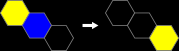
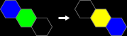
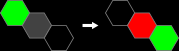
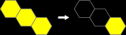
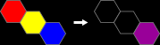
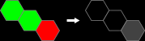
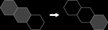
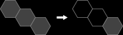

SpectraHex is a single player game in which the objective is to remove as many hexagonal tiles as you can from the game board, in as few moves as possible.
At the game start, you are presented with a full board of randomly placed colored tiles.
Moves consist of leaping a tile over an adjacent tile and onto a suitable space. Moves are performed to remove tiles from the board.
If you can remove all but a single primary-colored tile, you have done all you can do, and have solved that particular game.
During a game you may undo and redo moves that have been made. This is a normal part of game play and you are encouraged to backtrack to try different approaches.
Hexes on the board may be empty, or filled with one, two or three tiles. The color of the hex shows you which tiles are present.
Shown as a black hex. These count as zero tiles remaining:
These are the three traditional subtractive primary colors, red, blue and yellow. They count as one tile remaining:
These are combinations of two of the three primary colors. You will likely know these from painting or coloring. Orange, green and violet, they count as two tiles remaining:
Tertiary tiles are all three primaries combined. Shown as gray, they count as three tiles remaining:
Moving means a starting tile will leave its hex, jump over another tile (but NOT over an empty space) and arrive at the hex on the other side.
To start a move, select a tile by tapping on it. The board will highlight that tile with a white circle and will also highlight any legal destinations for it with black circles.
To complete the move, tap one of the destinations.
To cancel your move, tap the starting tile again (marked with a white circle) and it will be unselected, leaving the board unchanged.
Primary tiles remove ANY other primary tile when they leap over them:

Colors subtract if possible when a tile leaps over another:


Colors add together if possible when they land on each other:



The tertiary tile can only leap over itself and can only land on itself or an empty hex. Because it's a combination of all three primary colors, it's difficult to work with:


Consists of 36 randomly placed primary tiles. 12 red, 12 blue and 12 yellow.
9 each of red, blue and yellow, and 3 each of violet, green and orange. Making a total of 45 tiles.
16 equally distributed primaries, 16 equally distributed secondaries, and 4 tertiaries. Making a total of 60 tiles. This is very tough!
To contact the developer: Dino Morelli